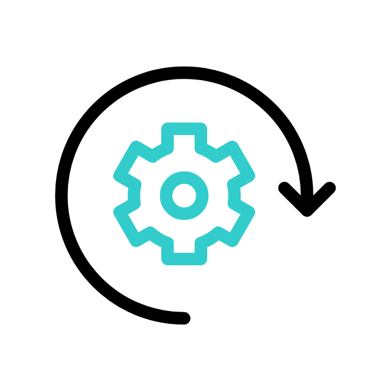

Firmas
Envío de reclamo
Revisión final
Fechas
Siniestro e inspección
Fecha del siniestro
{{formateadaSiniestro}}
Fecha de inspección
{{fechaInspeccionLocal || laFechaInspeccion}}
Formulario
Segmentos del reclamo
Daños seleccionados
Vehículo afiliado

Código BPM
{{codigoBPMFicohsa}}
Código Reclamo
{{codigoReclamoFicohsa}}
Estado del envío
Validación del reclamo
{{textoInfo}} {{textoInfoIncompleto}} {{textoInfoDanios}} {{textoInfoDaniosCulpa}} {{textoFotos}}